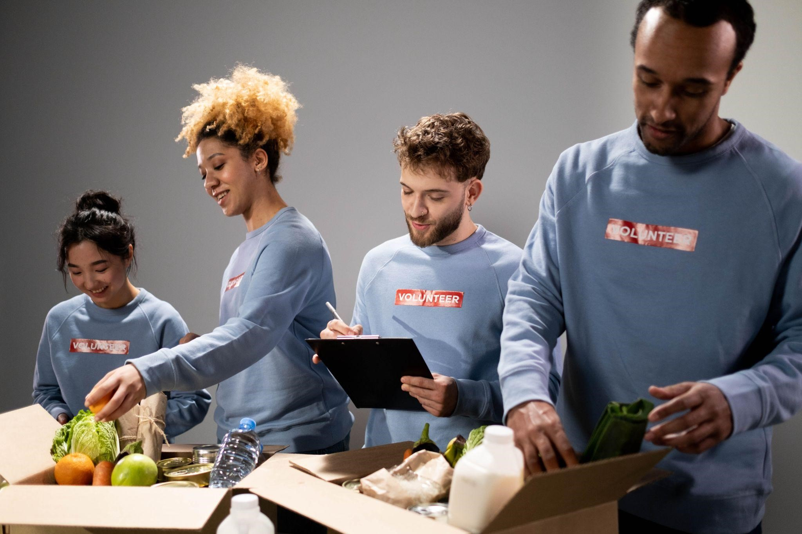

Identidad visual
Dominio
www.CorazonesLlenos.com
Eslogan
"Alimentando corazones, un plato a la vez."
Logo
Paleta de colores y de estilos
utilizamos una paleta de colores (naranja, marrón) he intentamos transmitir a través de estos colores : entusiasmo, confianza , generosidad , creatividad que nos relacionen con lo acogedor. con estos colores deseamos transmitir calidez para que el público nos identifique con facilidad cuando ven nuestro logo o nuestro color. Para crear un vínculo más fuerte con los usuarios. Lo visual trasmite de manera inconsciente y automática.
Los colores nos ayudan a trasmitir la personalidad de nuestra ONG. Un color principal nos ayuda a que el público lo vea y lo relaciona automáticamente con nosotros. Utilizar una misma paleta de colores ayuda a que todas nuestras pieza se parezcan y sean consistentes.
Imagen general que desean transmitir

Esta imagen es un claro ejemplo de lo que buscamos transmitir , confianza , seriedad , compromiso y calidez .
Nuestros usuarios relacionan nuestros valores y nuestra seriedad con nuestra imagen visual. nosotros somos consistentes en nuestras piezas y tratamos de mantener un mismo estilo esto trasmite mayor seriedad y confianza.
Lo que deberían pensar los internautas al visitar nuestro sitio web es
Empatía: Los internautas pueden sentir empatía hacia las personas necesitadas y estar dispuestos a ayudar.
Compasión: Al ver la pobreza y la falta de alimentos, algunos internautas pueden sentir compasión y desear aliviar esa situación.
Motivación para ayudar: Los interesados en causas sociales pueden ver el sitio web como una oportunidad para marcar una diferencia positiva y estar motivados para contribuir.
Confianza y transparencia: Los internautas desean confiar en el sitio web y buscan información sobre la organización y cómo se utilizarán las donaciones.